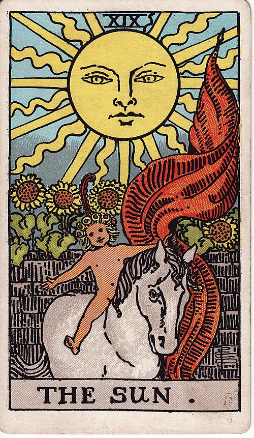

| Arcana | Major · XIX |
| Suit | — |
| Element | Fire |
| Attribution | Sun |
The Sun
In shortIt is going well. You are allowed to enjoy it.
Upright
This is the clearest and most generous card in the deck. Things are visible, warm and going well — success that is not a secret, health coming back, happiness that does not need justifying. It has an uncomplicated quality that adult life makes rare, and where it turns up the honest reading is simply: this is good, and you are allowed to enjoy it. It also means truth coming fully into the open.
Reversed
The sun is still up but something is between you and it. This is happiness that is present but not landing, success that arrives without satisfaction, or cheerfulness performed over something unresolved. It rarely means disaster — more often a delay, or a reminder that the good thing needs to be actually felt rather than ticked off.
The turn
Say the good thing out loud and let it count. Enjoyment here is the assignment.
Reading with your own deck?
Sage records the cards you actually pull, writes the reading, keeps every one, and shows you what keeps returning across them. Free, private, no account.